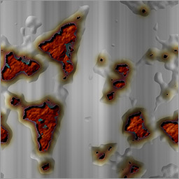

Book Photoshop design collection sample test
Texture
p008 fire 炎

p012 silver paper 銀紙
p016 grain 木目

p019 tatami 畳

バイキュービック法 → バイキュービック自動
p023 tile タイル

フィルター → フィルターギャラリー → アーティスティック
「単一指向性」→「ポイント」
「高さ」を5程度に
p027 brick レンガ

フィルター → フィルターギャラリー → スケッチ
フィルター → フィルターギャラリー → テクスチャ
p035 leopard ヒョウ柄

フィルター → フィルターギャラリー → テクスチャ
p039 kaleidoscope 万華鏡風模様

p044 old stone wall 古い石垣
フィルター → フィルターギャラリー → スケッチ
フィルター → フィルターギャラリー → テクスチャ
p052 rock face 岩肌
自動レベル補正→自動コントラスト
p057 hairline metal ヘアラインの金属
p061 rusted wall 錆のある壁

エンボスの高さ1→高さ5
照明効果のスポットライト→ポイント
カラー白、照度: 37
彩色白、露光量: -63
光沢: 0
メタリック: -1
環境光: 80
高さ: -56
p069 explosion 爆発
Universe
p072 starry 星空
バイキュービック法 → バイキュービック自動
p075 earth 地球
バイキュービック法 → バイキュービック自動
p085 galaxy 銀河
渦巻: 200
p090 warp navigation ワープ航法
p094 synchrotron radiation 放射光
p098 moon surface 月面
照明効果のスポットライト→スポット
カラー白、照度: 80
彩色白、露光量: -50
光沢: 15
メタリック: 15
環境光: 80
高さ: -80
p098 moon surface2 月面2

Sky / Landscape
p102 ordinary clouds 普通の雲
p108 backlit clouds 逆光の雲
p111 rainbow 虹